선형대수의 기본 자료: 스칼라, 벡터, 행렬
이 장을 마치면
앞의 두 장에서 우리는 선형대수가 왜 필요한지, 그리고 그것을 계산할 도구가 무엇인지 살펴보았다. 이제 본격적으로 선형대수가 다루는 대상을 만나 볼 차례다. 그 대상은 세 가지다. 숫자 하나인 스칼라, 숫자를 한 줄로 늘어놓은 벡터, 그리고 벡터를 여러 개 쌓은 행렬이다.
이 셋의 관계는 단순한 크기의 차이가 아니다. 스칼라에서 벡터로 넘어갈 때 방향이라는 새로운 성질이 생기고, 벡터에서 행렬로 넘어갈 때 변환이라는 새로운 역할이 생긴다. 이 장에서는 그 첫 번째 도약을 다룬다.
3.1 스칼라 값과 스칼라가 모인 벡터
수는 어디서 왔는가
수number는 양을 표현하기 위한 것이다. 양은 재어서 알 수 있는 값이며, 길이일 수도 넓이일 수도 무게일 수도 있다. 인간이 처음 발견한 수는 아마도 자연수일 것이다. 자연수로 사물의 개수를 헤아릴 수 있었고, 그것으로 많고 적음을 비교할 수 있었다. 이어서 부족함을 표현하는 음의 정수와 아무것도 없음을 표현하는 0이 발견되었고, 이들을 모두 모은 것이 정수다.
정수를 곰곰이 들여다보면 그 사이에 빈 공간이 있음을 알게 된다. 사과 하나를 둘로 쪼개어 친구와 나누면 나는 몇 개를 가진 것인가? 없는 것도 아니고 하나인 것도 아니다. 이렇게 정수 사이를 쪼개어 얻는 수가 유리수rational number다. 유리수를 무한히 잘게 쪼개면 빈틈이 없어질 것 같지만, 피타고라스 정리는 \(\sqrt{2}\)처럼 정수의 비로 표현할 수 없는 수가 존재함을 알려 주었다. 이들이 무리수irrational number이며, 유리수와 무리수를 모두 합친 것이 실수real number다.
실수를 이루는 수들을 자연수·정수·유리수·무리수로 나누어 부르지만, 이들에게는 공통된 성질이 하나 있다. 어느 것이 크고 어느 것이 작은지 언제나 비교할 수 있다는 것이다. 그래서 실수는 수직선 위에 빠짐없이 순서대로 늘어놓을 수 있다. 이렇게 크기만으로 자기 위치가 결정되는 값을 스칼라scalar라고 한다.
스칼라 값의 크기는 0에서 얼마나 멀리 떨어져 있는가를 뜻한다. 두 스칼라를 더하면 그 떨어진 정도가 더해진다. 스칼라가 가진 성질은 오직 이 크기(magnitude)뿐이다.
하나의 숫자로는 부족한 순간
이제 수직선 두 개가 직각으로 교차한다고 상상해 보자. 이 평면 위의 한 점을 어떻게 표현할까?
원점에서 떨어진 거리 하나로 표현하면 어떨까? 그러면 곤란해진다. 원점에서 거리가 2인 점은 무수히 많다. 원점을 중심으로 하는 반지름 2짜리 원 위의 모든 점이 후보가 된다. 하나의 숫자로는 그중 어느 것인지 지정할 수 없다.
해결책은 두 방향으로 각각 얼마나 떨어져 있는지를 함께 적는 것이다. 가로로 1.3, 세로로 1.1만큼 떨어진 점은 \((1.3, 1.1)\)로 적으면 다른 어떤 점과도 구별된다. 이 공간에서 한 점을 지정하려면 최소한 두 개의 값이 필요하며, 그래서 이 공간을 2차원 공간이라 부르고 \(\Rsp{2}\)로 표기한다.
이렇게 크기와 함께 방향의 정보를 담고 있는 양을 벡터vector라고 부른다.
\(n\)개의 실수를 순서대로 늘어놓은 것을 \(n\)차원 벡터라 하고, 그 전체 집합을 \(\Rsp{n}\)으로 나타낸다. 벡터는 굵은 소문자로 쓰며, 특별한 언급이 없는 한 열의 형태로 적는다.
벡터는 라틴어 vehere에서 왔는데, 무엇인가를 "나르다"라는 뜻이다. 그래서 의학에서 벡터는 병원체를 옮기는 매개체를 뜻하고, 분자생물학에서는 외부 유전 물질을 세포로 옮기는 DNA 분자를 뜻한다. 모두 한 곳에서 다른 곳으로 옮긴다는 의미를 공유한다. 수학의 벡터도 마찬가지다. 원점에서 어떤 점으로 "옮겨 가는" 이동을 나타낸다.
속도와 속력 — 벡터와 스칼라의 차이
스칼라와 벡터의 차이를 실감하기에 좋은 예가 속도와 속력이다. 우리는 흔히 "저 차의 속도는 시속 100 km"라고 말한다. 그러나 물리적으로 이 표현은 틀렸다. 100이라는 숫자 하나로는 차가 어느 방향으로 가는지 알 수 없기 때문이다.
그림 3.2에서 두 차량은 모두 시속 100 km로 달리지만 방향이 정반대다. 벡터의 관점에서 이 둘의 속도는 전혀 다르다. 우리가 흔히 속도라고 부르는 것은 사실 속도의 크기, 즉 스칼라 양인 속력이다.
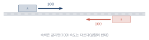
| 스칼라 | 벡터 | |
|---|---|---|
| 가진 정보 | 크기만 | 크기와 방향 |
| 표기 | \(a\), \(\lambda\) (이탤릭 소문자) | \(\vv{v}\), \(\vv{x}\) (굵은 소문자) |
| 예 | 질량, 시간, 온도, 속력 | 힘, 속도, 변위, 데이터 특징 |
| 넘파이 | 3.0 (파이썬 수) | np.array([3., 2.]) |
벡터를 넘파이로 만들고 그리기
이제 벡터를 코드로 다루어 보자. 벡터를 만드는 일은 간단하고, 그리는 일은 앞 장에서 만든 도구가 대신해 준다.
import numpy as np
from tuvis import *
v = np.array([3., 2.])
w = np.array([-2., 3.])
print('v :', v)
print('shape :', v.shape) # (2,) — 2차원 벡터
print('v[0] :', v[0]) # 첫 번째 성분
fig, ax = new_axes(xlim=(-4, 4), ylim=(-4, 4))
draw_vector(ax, v, color='crimson', label='v = (3, 2)')
draw_vector(ax, w, color='royalblue', label='w = (-2, 3)')
fig.show()v : [3. 2.] shape : (2,) v[0] : 3.0
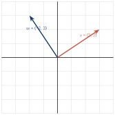
v.shape이 (2,)로 나온 점에 주목하자. 이것은 (2,1)도 (1,2)도 아니다. 넘파이의 1차원 배열에는 행인지 열인지의 구분이 없다. 수식에서는 벡터를 열로 취급하면서 코드에서는 방향이 없는 1차원 배열을 쓰는 이 어긋남이, 넘파이를 처음 쓰는 사람들이 가장 많이 걸려 넘어지는 지점이다. 3.3절에서 자세히 다룬다.
3.2 벡터의 다양한 특징
화살표인가, 점인가
벡터를 그리는 가장 흔한 방법은 화살표다. 화살표는 시작점과 끝점을 가지며, 방향은 벡터의 방향을, 길이는 벡터의 크기를 나타낸다. 크기와 방향을 한꺼번에 보여 주니 벡터를 표현하기에 더없이 좋은 도구다.
그런데 여기서 중요한 사실이 있다. 벡터에게 위치는 없다. 크기와 방향이 같다면 어디에 그려도 같은 벡터다. 그림 3.4에서 세 화살표는 서로 다른 곳에 있지만 모두 같은 벡터 \((2,1)\)이다.
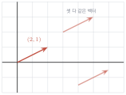
그렇다면 왜 우리는 늘 원점에서 시작하도록 그릴까? 편의 때문이다. 시작점을 원점으로 고정하면 화살표의 끝점 좌표가 곧 벡터의 성분이 된다. 이 약속 덕분에 벡터를 "점"으로 보는 두 번째 관점이 생긴다.
| 관점 | 언제 쓰는가 |
|---|---|
| 화살표(이동) | 벡터를 더하고 빼는 연산을 설명할 때. 힘·속도 같은 물리량을 다룰 때. |
| 점(위치) | 데이터를 다룰 때. 100명의 사람을 100개의 점으로 흩뿌려 볼 때. |
이 책에서는 두 관점을 상황에 따라 오간다. 4장의 벡터 연산에서는 주로 화살표로, 11장의 주성분 분석에서는 주로 점으로 볼 것이다. 같은 대상을 두 눈으로 보는 훈련이 선형대수의 직관을 키우는 지름길이다.
import numpy as np
from tuvis import *
V = np.array([[3., 1.], [1., 3.], [-2., 2.], [-1., -2.], [2., -3.]])
fig, (ax1, ax2) = new_axes(xlim=(-4, 4), ylim=(-4, 4), ncols=2)
draw_vectors(ax1, V) # 화살표로 보기
ax1.set_title('as arrows')
draw_points(ax2, V, color='crimson', s=50) # 점으로 보기
ax2.set_title('as points')
fig.show()벡터의 차원 — 2차원 너머로
우리가 그릴 수 있는 것은 2차원, 잘해야 3차원까지다. 그러나 실제 데이터의 차원은 훨씬 높다.
| 데이터 | 차원 | 각 성분의 의미 |
|---|---|---|
| (키, 몸무게) | 2 | cm, kg |
| RGB 색상 | 3 | 빨강·초록·파랑의 세기 |
| \(28 \times 28\) 손글씨 이미지 | 784 | 각 픽셀의 밝기 |
| 컬러 사진 \(224 \times 224\) | 150,528 | 픽셀 \(\times\) 채널 |
| 문장 임베딩 | 768 – 4096 | 학습으로 얻어진 의미의 좌표 |
784차원 공간을 상상할 수 있는가? 없다. 그러나 상상할 필요가 없다. 2차원에서 성립하는 규칙이 784차원에서도 그대로 성립하기 때문이다. 두 벡터를 더하는 방법, 길이를 재는 방법, 각도를 구하는 방법은 차원과 무관하게 동일하다. 그래서 우리는 2차원에서 그림으로 이해하고, 그 이해를 고차원으로 그대로 가져간다. 이것이 선형대수를 배울 때 그림이 강력한 이유다.
2차원과 3차원 그림은 이해를 위한 발판이다. 실제 계산은 수백, 수천 차원에서 이루어지지만 규칙은 똑같다. 그림에서 얻은 직관을 고차원으로 옮기는 것이 이 책의 학습 전략이다.
특별한 벡터들
모든 성분이 0인 벡터를 영벡터zero vector라 하고 \(\zerovec\)으로 쓴다. 영벡터의 방향은 정의하지 않는다.
크기가 1인 벡터를 단위벡터unit vector라고 한다. 특히 한 성분만 1이고 나머지가 0인 벡터
표준기저벡터는 앞으로 매우 자주 등장한다. 이유는 간단하다. 어떤 벡터든 표준기저벡터의 조합으로 적을 수 있기 때문이다.
즉 벡터의 성분이란 "\(\vv{e}_1\) 방향으로 얼마, \(\vv{e}_2\) 방향으로 얼마"를 적은 것이다. 이 관점은 5장에서 행렬 곱을 이해할 때, 그리고 10장에서 좌표계를 바꿀 때 결정적인 역할을 한다.
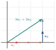
import numpy as np
e1 = np.array([1., 0.])
e2 = np.array([0., 1.])
v = 3 * e1 + 2 * e2
print('v =', v)
# n차원 표준기저는 단위행렬의 열이다
I = np.eye(3)
print('3차원 표준기저:\n', I)
print('e_2 =', I[:, 1])v = [3. 2.] 3차원 표준기저: [[1. 0. 0.] [0. 1. 0.] [0. 0. 1.]] e_2 = [0. 1. 0.]
단위행렬의 각 열이 곧 표준기저벡터다. 이 사실은 우연이 아니며, 5장에서 그 이유가 밝혀진다.
3.3 벡터들이 모인 행렬
행벡터와 열벡터
지금까지 \(\Rsp{2}\)의 벡터를 \((3, 2)\)처럼 쉼표로 구분해 적었다. 이것을 괄호 표기법이라 한다. 그러나 계산을 하려면 방향을 정해 주어야 한다. 가로로 늘어놓으면 행벡터row vector이고,
세로로 늘어놓으면 열벡터column vector다.
이 책은 물론 대부분의 문헌이 열벡터를 기본으로 삼는다. 이유는 5장에서 명확해지는데, 미리 말하자면 행렬 곱 \(\mm{A}\vv{x}\)가 자연스럽게 성립하려면 \(\vv{x}\)가 열이어야 하기 때문이다.
다만 열벡터는 지면을 세로로 많이 차지한다. 그래서 본문에서 자리를 아껴야 할 때는 전치 기호를 써서 \(\vv{v} = [3\ 2]\tp\)처럼 적는다. 이 책에서는 세 가지 표기를 상황에 따라 모두 사용하되, 의미는 언제나 열벡터임을 기억하자.
넘파이의 1차원 배열이라는 함정
여기서 넘파이 초보자를 괴롭히는 문제가 등장한다. 넘파이의 1차원 배열은 행도 열도 아니다.
import numpy as np
v = np.array([3., 2.])
print('1차원 배열 :', v.shape) # (2,)
row = np.array([[3., 2.]]) # 대괄호가 두 겹
col = np.array([[3.], [2.]])
print('행벡터 :', row.shape) # (1, 2)
print('열벡터 :', col.shape) # (2, 1)
# 1차원 배열을 열벡터로 바꾸는 방법
print('reshape :', v.reshape(-1, 1).shape)
print('newaxis :', v[:, np.newaxis].shape)1차원 배열 : (2,) 행벡터 : (1, 2) 열벡터 : (2, 1) reshape : (2, 1) newaxis : (2, 1)
1차원 배열에 .T를 써도 아무 일도 일어나지 않는다.
v = np.array([3., 2.])
print(v.T.shape) # (2,) — 전치했는데 그대로!reshape(-1, 1)로 2차원으로 만들어야 한다.그렇다면 늘 2차원으로 만들어 써야 할까? 그렇지 않다. 넘파이는 1차원 배열을 행렬과 곱할 때 상황에 맞게 알아서 해석해 준다. 실무에서는 오히려 1차원 배열을 쓰는 것이 간결하고 오류도 적다.
import numpy as np
A = np.array([[1., 2.],
[3., 4.]])
v = np.array([1., 1.]) # 1차원 배열
print('A @ v :', A @ v) # v를 열벡터로 해석 -> (2,)
print('v @ A :', v @ A) # v를 행벡터로 해석 -> (2,)A @ v : [3. 7.] v @ A : [4. 6.]
- 수식에서 벡터는 열벡터가 기본이다.
- 넘파이의 1차원 배열은 행도 열도 아니며,
.T가 통하지 않는다. A @ v에서는 열로,v @ A에서는 행으로 알아서 해석된다. 이 편의를 활용하되, 형상 오류가 나면shape부터 확인하자.
벡터를 쌓으면 행렬
이제 벡터 여러 개를 모아 보자. 다섯 사람의 (키, 몸무게) 데이터를 각각 벡터로 두고 세로로 쌓으면 다음과 같은 직사각형 배열이 된다.
이것이 행렬matrix이다.
실수를 \(m\)개의 행과 \(n\)개의 열로 직사각형으로 배열한 것을 \(m \times n\) 행렬이라 하고, 그 전체 집합을 \(\Rmat{m}{n}\)으로 나타낸다. 행렬은 굵은 대문자로 쓰고, \(i\)행 \(j\)열의 성분은 \(a_{ij}\)로 나타낸다.
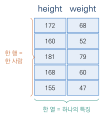
행렬을 보는 방식은 두 가지다. 행으로 보면 각 행이 하나의 데이터(사람 한 명)이고, 열로 보면 각 열이 하나의 특징(키라는 속성 전체)이다. 데이터 분석에서는 이 두 관점을 끊임없이 오간다.
import numpy as np
X = np.array([[172., 68.], [160., 52.], [181., 79.],
[168., 60.], [155., 47.]])
print('shape :', X.shape)
print('세 번째 사람 :', X[2, :]) # 행으로 보기
print('키만 전부 :', X[:, 0]) # 열로 보기
print('평균 키/몸무게:', X.mean(axis=0))shape : (5, 2) 세 번째 사람 : [181. 79.] 키만 전부 : [172. 160. 181. 168. 155.] 평균 키/몸무게: [167.2 61.2]
행렬에는 서로 다른 두 가지 역할이 있고, 이 책에서 둘 다 다룬다.
- 데이터를 담는 그릇 위의 \(\mm{X}\)처럼 관측값을 모아 놓은 표. 11장의 주성분 분석이 다루는 대상이다.
- 공간을 변형하는 장치 벡터에 곱해져서 그 벡터를 회전·확대·전단시키는 연산자. 7–10장의 주제다.
3.4 특별한 행렬들
행렬 중에는 모양이 특별해서 따로 이름이 붙은 것들이 있다. 이들은 계산이 쉽거나 좋은 성질을 가지기 때문에, 어려운 행렬을 이런 행렬들의 조합으로 쪼개는 것이 선형대수의 큰 전략 가운데 하나다(12장의 행렬 분해가 정확히 그 이야기다).
정방행렬과 전치행렬
행의 수와 열의 수가 같은 \(n \times n\) 행렬을 정방행렬square matrix 또는 정사각행렬이라 한다.
행렬 \(\mm{A}\)의 행과 열을 맞바꾼 행렬을 전치행렬transpose matrix이라 하고 \(\mm{A}\tp\)로 쓴다. 즉 \(\mm{A}\tp\)의 \((i,j)\) 성분은 \(\mm{A}\)의 \((j,i)\) 성분이다.
전치는 대각선을 축으로 행렬을 접는 것과 같다. 두 번 접으면 제자리로 돌아오므로 \((\mm{A}\tp)\tp = \mm{A}\)가 성립한다.
import numpy as np
from tuvis import *
A = np.array([[1., 2., 3.],
[4., 5., 6.]])
print('A shape:', A.shape)
print('A.T shape:', A.T.shape)
print(A.T)
fig, (ax1, ax2) = new_matrix_axes(ncols=2)
show_matrix(ax1, A, fmt='{:.0f}', title='A (2x3)')
show_matrix(ax2, A.T, fmt='{:.0f}', title='A.T (3x2)')
fig.show()A shape: (2, 3) A.T shape: (3, 2) [[1. 4.] [2. 5.] [3. 6.]]
>!
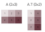
단위행렬과 대각행렬
정방행렬에서 \(i = j\)인 성분 \(a_{ii}\)를 대각성분diagonal element이라 한다. 대각성분을 제외한 모든 성분이 0인 행렬을 대각행렬diagonal matrix이라 한다.
대각성분이 모두 1인 대각행렬을 단위행렬identity matrix이라 하고 \(\Id\) 또는 \(\Id_n\)으로 쓴다.
단위행렬은 곱셈에서 숫자 1이 하는 역할을 한다. 어떤 행렬에 곱해도 그 행렬이 그대로 나온다(\(\mm{A}\Id = \Id\mm{A} = \mm{A}\)). 대각행렬은 각 축을 독립적으로 늘이거나 줄이는 변환에 해당하며, 계산이 매우 쉬워서 10장의 대각화에서 목표로 삼는 형태다.
삼각행렬
대각선 아래쪽 성분이 모두 0인 정방행렬을 상삼각행렬upper triangular matrix, 대각선 위쪽 성분이 모두 0인 정방행렬을 하삼각행렬lower triangular matrix이라 한다.
삼각행렬이 중요한 이유는 연립방정식을 아주 쉽게 풀 수 있기 때문이다. 상삼각행렬 꼴이 되면 맨 아래 식에는 미지수가 하나뿐이라 즉시 풀리고, 그 값을 위로 대입해 가면 나머지도 차례로 풀린다. 이것이 8장에서 배울 가우스 소거법의 목표이고, 12장의 LU 분해가 하는 일이다.
대칭행렬과 음행렬
\(\mm{A}\tp = \mm{A}\)를 만족하는 정방행렬을 대칭행렬symmetric matrix이라 한다. 즉 \(a_{ij} = a_{ji}\)이며, 대각선을 기준으로 접었을 때 딱 겹친다.
대칭행렬은 실제 문제에서 놀랄 만큼 자주 등장한다. 두 도시 사이의 거리, 두 사람 사이의 친밀도, 두 특징 사이의 공분산 — 모두 순서를 바꿔도 값이 같으므로 대칭이다. 그리고 대칭행렬은 고유값이 반드시 실수이고 고유벡터가 서로 직교한다는 훌륭한 성질을 가진다(10장).
한편 모든 성분의 부호를 바꾼 행렬 \(-\mm{A}\)를 음행렬negative matrix이라 한다. \(\mm{A} + (-\mm{A}) = \mm{O}\)(영행렬)이 성립하므로, 음행렬은 덧셈에 대한 역원 역할을 한다.
한눈에 보는 특별한 행렬들
말로 설명하는 것보다 그림으로 보는 편이 훨씬 빠르다. show_matrix()로 여섯 가지 행렬을 한꺼번에 그려 보자.
import numpy as np
from tuvis import *
rng = np.random.default_rng(42)
M = rng.integers(-5, 6, (5, 5)).astype(float)
mats = {
'identity' : np.eye(5),
'diagonal' : np.diag([3., -2., 5., 1., -4.]),
'upper tri' : np.triu(M), # 위쪽 삼각만 남김
'lower tri' : np.tril(M), # 아래쪽 삼각만 남김
'symmetric' : (M + M.T) / 2, # 대칭으로 만드는 표준 방법
'general' : M,
}
fig, axes = new_matrix_axes(nrows=2, ncols=3)
for ax, (name, A) in zip(axes.flat, mats.items()):
show_matrix(ax, A, fmt='{:.0f}', title=name)
fig.show()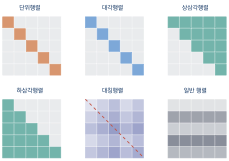
그림 3.7처럼 행렬을 색으로 보면 구조가 즉시 눈에 들어온다. 숫자를 하나하나 확인할 필요가 없다. 이 방식은 큰 행렬을 다룰 때 특히 위력적이어서, 앞으로 소거법의 진행 과정이나 특이값 분해의 결과를 확인할 때 계속 사용한다.
| 이름 | 조건 | 왜 중요한가 (다루는 장) |
|---|---|---|
| 정방행렬 | \(m = n\) | 역행렬·행렬식·고유값을 논할 수 있다 (6–9장) |
| 전치행렬 | \((\mm{A}\tp)_{ij} = a_{ji}\) | 내적과 최소제곱의 필수 도구 (4, 12장) |
| 단위행렬 | \(a_{ii}=1\), 나머지 0 | 곱셈의 항등원, 역행렬의 정의 (5–6장) |
| 대각행렬 | \(i \neq j\)면 \(a_{ij}=0\) | 계산이 가장 쉬운 형태, 대각화의 목표 (10장) |
| 상삼각행렬 | 대각선 아래가 0 | 소거법의 결과, 역대입으로 풀린다 (8, 12장) |
| 대칭행렬 | \(\mm{A}\tp = \mm{A}\) | 고유벡터가 직교한다, 공분산행렬 (10–11장) |
임의의 정방행렬 \(\mm{A}\)는 다음과 같이 언제나 두 조각으로 나뉜다.
S = (M + M.T) / 2 # 대칭 부분
K = (M - M.T) / 2 # 반대칭 부분
print(np.allclose(S + K, M)) # True
print(np.allclose(S.T, S)) # True
print(np.allclose(K.T, -K)) # True- 벡터를 두 얼굴로 보자. 여섯 개의 2차원 벡터를 화살표와 점으로 각각 그려 나란히 비교하시오.
import numpy as np from tuvis import * V = np.array([[3., 1.], [1., 3.], [-2., 2.], [-3., -1.], [0., -3.], [2., -2.]]) fig, (ax1, ax2) = new_axes(xlim=(-4, 4), ylim=(-4, 4), ncols=2) draw_vectors(ax1, V); ax1.set_title('vectors as arrows') draw_points(ax2, V, color='crimson', s=60); ax2.set_title('vectors as points') fig.show()>!
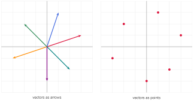
- 성분 분해를 그림으로 확인하자. 벡터 \((4,3)\)이 \(4\vv{e}_1 + 3\vv{e}_2\)임을 화살표를 이어 붙여 보이시오.
import numpy as np from tuvis import * v = np.array([4., 3.]) e1 = np.array([1., 0.]) e2 = np.array([0., 1.]) fig, ax = new_axes(xlim=(-1, 5), ylim=(-1, 5)) # e1을 4번 이어 붙이기 for k in range(4): draw_vector(ax, e1, origin=k * e1, color='crimson', width=0.008) # 그 끝에서 e2를 3번 이어 붙이기 for k in range(3): draw_vector(ax, e2, origin=4 * e1 + k * e2, color='royalblue', width=0.008) draw_vector(ax, v, color='seagreen', label='v = 4e1 + 3e2') fig.show()>!
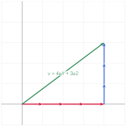
- 데이터 행렬을 산점도로 그리자. 열 명의 (키, 몸무게)를 만들고 산점도로 그린 뒤, 평균 지점을 별표로 표시하시오.
import numpy as np from tuvis import * rng = np.random.default_rng(42) height = rng.normal(168, 8, 10) # 평균 168, 표준편차 8 weight = 0.9 * (height - 100) + rng.normal(0, 4, 10) X = np.column_stack([height, weight]) # (10, 2) 데이터 행렬 print('shape :', X.shape) print('평균 :', X.mean(axis=0)) fig, ax = new_axes(xlim=(150, 190), ylim=(40, 90), xlabel='height (cm)', ylabel='weight (kg)') draw_points(ax, X, color='steelblue', s=50, label='people') draw_points(ax, X.mean(axis=0).reshape(1, 2), color='crimson', s=200, label='mean') fig.show()>!
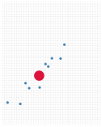
np.column_stack()은 여러 1차원 배열을 열로 세워 행렬을 만든다. 데이터를 모을 때 자주 쓰는 함수다. - 전치가 무슨 일을 하는지 눈으로 보자. \(3 \times 5\) 행렬과 그 전치를 나란히 그리고, 특정 성분이 어디로 옮겨 갔는지 확인하시오.
import numpy as np from tuvis import * A = np.arange(15).reshape(3, 5).astype(float) fig, (ax1, ax2) = new_matrix_axes(ncols=2) show_matrix(ax1, A, fmt='{:.0f}', title='A (3x5)') show_matrix(ax2, A.T, fmt='{:.0f}', title='A.T (5x3)') print('A[1, 3] =', A[1, 3]) print('A.T[3, 1] =', A.T[3, 1]) # 같은 값 fig.show()>!
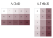
- 특별한 행렬을 만들어 보자. 다음을 각각 한 줄로 생성하시오.
import numpy as np print('단위행렬:\n', np.eye(4)) print('대각행렬:\n', np.diag([1., 2., 3., 4.])) print('상삼각 :\n', np.triu(np.ones((4, 4)))) print('하삼각 :\n', np.tril(np.ones((4, 4)))) print('영행렬 :\n', np.zeros((2, 3))) - 대칭행렬을 만들고 확인하자. 무작위 행렬로부터 대칭행렬을 만들고, 실제로 대칭인지 검사하시오. 그리고 거리 행렬이 왜 자연스럽게 대칭인지 확인하시오.
import numpy as np from tuvis import * rng = np.random.default_rng(1) M = rng.normal(0, 1, (4, 4)) S = (M + M.T) / 2 print('대칭인가 :', np.allclose(S, S.T)) # 네 도시의 좌표로부터 거리 행렬 만들기 cities = np.array([[0., 0.], [3., 4.], [6., 0.], [3., -4.]]) diff = cities[:, None, :] - cities[None, :, :] # (4, 4, 2) D = np.sqrt((diff ** 2).sum(axis=2)) # (4, 4) print('거리 행렬:\n', np.round(D, 2)) print('대칭인가 :', np.allclose(D, D.T))대칭인가 : True 거리 행렬: [[0. 5. 6. 5.] [5. 0. 5. 8.] [6. 5. 0. 5.] [5. 8. 5. 0.]] 대칭인가 : True
cities[:, None, :] - cities[None, :, :]는 브로드캐스팅을 이용해 모든 쌍의 차이를 한 번에 구하는 기법이다. 이중 반복문 없이 \(4 \times 4\)개의 거리가 계산된다. 거리는 순서를 바꿔도 같으므로 결과는 반드시 대칭이고, 대각성분은 자기 자신과의 거리이므로 0이다. - 이미지도 행렬이다. 간단한 흑백 패턴을 행렬로 만들어 그림으로 표시하고, 전치했을 때 어떻게 변하는지 확인하시오.
import numpy as np import matplotlib.pyplot as plt # 8x8 체스판 무늬 만들기 (반복문 없이) i = np.arange(8).reshape(8, 1) j = np.arange(8).reshape(1, 8) board = (i + j) % 2 # 브로드캐스팅 # 왼쪽 위에 대각선 하나 그리기 board = board.astype(float) board[np.arange(8), np.arange(8)] = 0.5 fig, (ax1, ax2) = plt.subplots(1, 2, figsize=(7, 3.6)) ax1.imshow(board, cmap='gray'); ax1.set_title('board') ax2.imshow(board.T, cmap='gray'); ax2.set_title('board.T') plt.tight_layout(); plt.show()이미지 한 장이 곧 행렬이라는 사실은 11장의 이미지 압축 실습에서 결정적으로 쓰인다.
- 3차원 벡터를 눈으로 보자. 지금까지는 평면 위의 벡터를 그렸다. 벡터의 정의에는 차원 제한이 없으므로 3차원도 똑같이 그릴 수 있다. 캔버스를 만드는 함수만
new_axes3d()로 바꾸면 된다.import numpy as np from tuvis import * V = np.array([[2., 1., 0.5], [-1., 2., 1.5], [0.5, -1., 2.]]) fig, ax = new_axes3d(xlim=(-2, 3), ylim=(-2, 3), zlim=(-1, 3)) draw_vectors(ax, V, labels=['a', 'b', 'c']) draw_points(ax, V, color='black', size=5) setCam(ax, (1.59, 1.12, 0.79)) # 보는 각도 fig.show()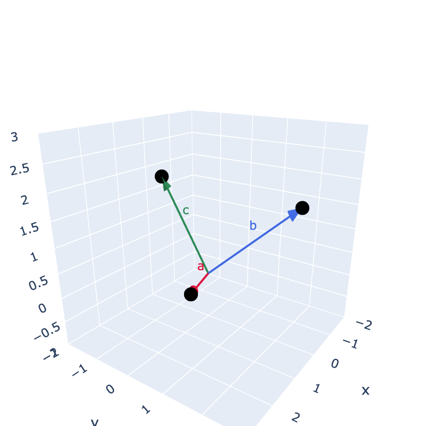
화살표의 끝점이 곧 그 벡터의 좌표다(검은 점). 2차원에서 익힌 "화살표와 점, 두 가지로 보기"가 3차원에서도 그대로 통한다는 것을 확인하자. 종이 위의 그림은 각도가 고정되어 있어 답답한데,
new_axes3d(..., interactive=True)로 바꾸면 마우스로 돌려 볼 수 있다.
3장 요약
- 스칼라는 크기만 가진 값으로 수직선 위의 한 점에 대응한다. 벡터는 크기와 함께 방향을 가진 양이며, \(n\)개의 실수를 순서대로 늘어놓은 것으로 \(\Rsp{n}\)의 원소다. 속력은 스칼라이고 속도는 벡터라는 예가 이 차이를 잘 보여 준다.
- 벡터는 두 가지 관점으로 볼 수 있다. 화살표(원점에서의 이동)로 보면 연산을 설명하기 좋고, 점(공간 속 위치)으로 보면 데이터를 다루기 좋다. 같은 대상을 두 관점으로 보는 훈련이 중요하다.
- 벡터에는 위치가 없다. 크기와 방향이 같으면 어디에 그려도 같은 벡터이며, 편의상 원점에서 시작하도록 그린다.
- 실제 데이터의 차원은 매우 높다(이미지 784차원, 임베딩 수천 차원). 그러나 2차원에서 성립하는 규칙이 고차원에서도 그대로 성립하므로, 그림으로 얻은 직관을 그대로 확장할 수 있다.
- 모든 성분이 0인 벡터를 영벡터, 크기가 1인 벡터를 단위벡터, 한 성분만 1인 벡터를 표준기저벡터 \(\vv{e}_i\)라고 한다. 모든 벡터는 표준기저벡터의 조합으로 적을 수 있으며(\(\vv{v} = 3\vv{e}_1 + 2\vv{e}_2\)), 단위행렬의 각 열이 곧 표준기저벡터다.
- 벡터를 가로로 적으면 행벡터, 세로로 적으면 열벡터다. 이 책과 대부분의 문헌은 열벡터를 기본으로 삼으며, 지면을 아낄 때는 \(\vv{v} = [3\ 2]\tp\)로 적는다.
- 넘파이의 1차원 배열은
shape이(2,)로, 행도 열도 아니다..T를 써도 변하지 않는다. 열벡터가 필요하면reshape(-1, 1)이나[:, np.newaxis]를 쓴다. 다만A @ v는 열로,v @ A는 행으로 알아서 해석되므로 대개는 1차원 배열이 더 편리하다. - 벡터를 여러 개 쌓으면 행렬이 된다. \(m \times n\) 행렬은 \(\Rmat{m}{n}\)의 원소이며 \(i\)행 \(j\)열 성분을 \(a_{ij}\)로 쓴다. 데이터 행렬에서 행은 하나의 관측, 열은 하나의 특징을 뜻한다.
- 행렬에는 두 가지 역할이 있다. 데이터를 담는 그릇(11장)과 공간을 변형하는 장치(7–10장)다. 어떤 행렬을 만나면 둘 중 어느 쪽인지 먼저 판단하는 것이 좋다.
- 특별한 행렬들: 정방행렬(\(m=n\)), 전치행렬(\(\mm{A}\tp\), 행과 열을 맞바꿈), 단위행렬(\(\Id\), 곱셈의 항등원), 대각행렬(대각성분만 존재), 상·하삼각행렬(소거법의 결과), 대칭행렬(\(\mm{A}\tp = \mm{A}\), 거리·공분산행렬이 대표적).
- 임의의 정방행렬은 대칭 부분 \(\frac{1}{2}(\mm{A}+\mm{A}\tp)\)과 반대칭 부분 \(\frac{1}{2}(\mm{A}-\mm{A}\tp)\)의 합으로 언제나 분해된다.
- 큰 행렬의 구조는 숫자보다 색으로 보는 편이 훨씬 빠르다.
show_matrix()로 단위·대각·삼각·대칭행렬의 모양을 한눈에 구별할 수 있다.
3장 연습문제
- ★ 스칼라와 벡터의 차이를 설명하고, 다음 물리량을 스칼라와 벡터로 분류하시오: 질량, 힘, 온도, 변위, 시간, 속도, 속력, 전기장.
- ★ "벡터에는 위치가 없다"는 말의 뜻을 설명하고, 그럼에도 우리가 벡터를 원점에서 시작하도록 그리는 이유를 쓰시오.
- ★ \(\Rsp{3}\)의 표준기저벡터 \(\vv{e}_1, \vv{e}_2, \vv{e}_3\)을 적고, 벡터 \((2, -5, 3)\)을 이들의 조합으로 나타내시오.
- ★★ 다음 코드의 각 출력을 예측한 뒤 실행하여 확인하시오.
v = np.array([1., 2., 3.]) print(v.shape, v.T.shape) print(v.reshape(-1, 1).shape) print(v.reshape(1, -1).shape) print(v[:, np.newaxis].shape) - ★★ \(3 \times 4\) 행렬 \(\mm{A}\)에 대하여 다음의 형상을 각각 쓰시오: \(\mm{A}\tp\), \((\mm{A}\tp)\tp\), \(\mm{A}\)의 2번 행, \(\mm{A}\)의 0번 열.
- ★★ 여섯 명의 학생에 대한 (국어, 영어, 수학) 성적 행렬을 만들고 다음을 구하시오.
- 세 번째 학생의 성적 벡터
- 수학 점수만 모은 벡터
- 각 학생의 총점을 담은 벡터
- 총점이 가장 높은 학생의 인덱스 (힌트:
np.argmax)
- ★★ 벡터 \((2,3)\), \((-1,2)\), \((0,-3)\)을 화살표로 그리고, 각 화살표 끝에 좌표를 표시하는 코드를 작성하시오.
tuvis의draw_vectors()를 사용하시오. - ★★ 다음 행렬이 대칭행렬인지 판정하고, 대칭이 아니라면 대칭 부분과 반대칭 부분으로 분해하시오.
\[ \mm{A} = \begin{bmatrix} 2 & 5 & 1 \\ 3 & 4 & 0 \\ 7 & 2 & 6 \end{bmatrix} \]
- ★★ \(\np{np.triu()}\)와 \(\np{np.tril()}\)을 사용하여 임의의 \(5 \times 5\) 행렬을 상삼각·하삼각·대각 부분으로 분해하고, 세 부분을 더하면 원래 행렬이 되는지 확인하시오. (주의: 대각성분이 중복되지 않도록 할 것)
- ★★★ 다섯 도시의 좌표를 정하고 모든 쌍의 거리를 담은 \(5 \times 5\) 거리 행렬을 반복문 없이 만드시오. 이 행렬이 대칭이고 대각성분이 0임을 확인하시오.
- ★★★ \(16 \times 16\) 크기의 배열로 다음 무늬를 각각 만들고
imshow로 표시하시오.- 체스판 무늬
- 왼쪽 위에서 오른쪽 아래로 갈수록 밝아지는 그러데이션
- 중심에서 멀어질수록 어두워지는 원형 무늬 (힌트: 중심까지의 거리를 계산)
- ★★★ 어떤 행렬 \(\mm{A} \in \Rmat{m}{n}\)에 대하여 \(\mm{A}\tp\mm{A}\)는 항상 대칭행렬임을 보이시오. 또 그 크기는 얼마인가? 무작위 행렬로 확인해 보시오. (이 사실은 11장과 12장에서 핵심적으로 쓰인다)
- ★★★ 데이터 행렬을 "행으로 보는 관점"과 "열로 보는 관점"이 각각 어떤 분석에 유용한지 예를 들어 설명하시오.